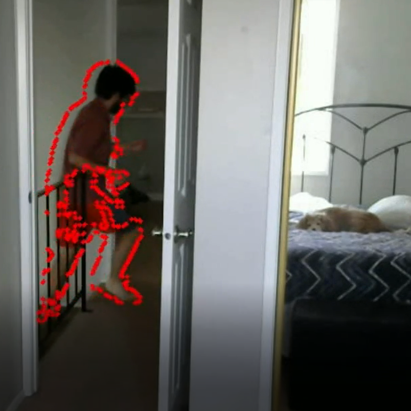

Graph Plot
This began as a team project for my analysis of algorithms class to approximate the Traveling Salesman Path through a complete graph. I realized it would be easier to verify our solutions were correct if we could visualize it, but rather than use an existing graph library and GUI, I decided to take a shot at making my own. Since then I have continued development of this project, adding genetic and multithreaded approximation algorithms, and further improving documention and readability.Languages/Frameworks/Tools: C++, qcustomplot, Qt Creator
Link to Github repository

Graph Reader
This Python script was designed to read dots drawn on paper and approximate the shortest Hamiltonian path between all the nodes. (e.g. the Traveling Salesman Problem) The algorithm first finds the edges of the paper, reads in all nodes contained within the paper, approximates the path, and draws the resulting path to the screen in real time. The algorithm utilizes C++ code from the project above to compute the Traveling Salesman Path, which I created Python bindings for using PyBind11.Languages/Frameworks/Tools: Python 3.6, C++, OpenCV, PyBind11, Pycharm
Link to video demonstration
Link to Github repository
Aces Up Game
This Mobile/Desktop Web Application was developed during my software engineering class. Myself and three other students used an Agile development methedology to design, build, and test over several two-week long sprints. The game is available to play here.Languages/Frameworks/Tools: Java, Ninja Web Framework, IntelliJ
Link to Game
Link to Github repository

Languages/Frameworks/Tools: Python 3.6, OpenCV, PyCharm
Link to Github repository
Security Camera
Python script which reads in webcam input and notifies the user when motion has been detected. The threshold for level of motion can be adjusted to account for possible camera vibration or false positive movement such as the bustling of treetops in the wind. Optionally, all motion over the course of the process' lifetime can be written out to a file.Languages/Frameworks/Tools: Python 3.6, OpenCV, PyCharm
Link to Github repository